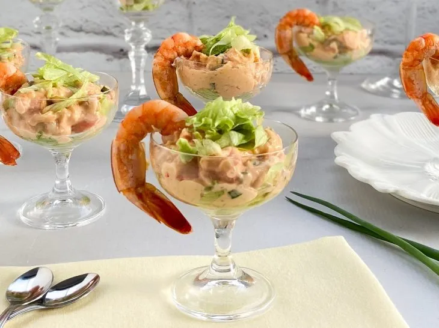
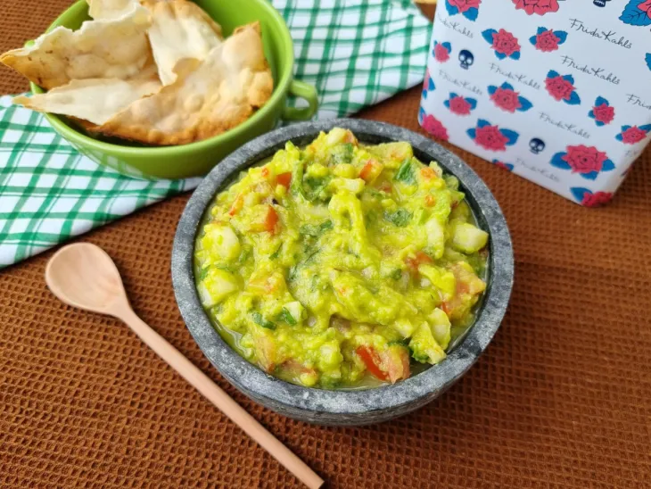

.jpg)
Entrada
Coquetel de camarão
O coquetel de camarão é uma entrada clássica e refrescante, muito popular nos anos 80 e que continua atemporal. Ele consiste em camarões cozidos e resfriados, servidos sobre um molho cremoso à base de maionese, ketchup e conhaque (molho rosé)
R$ 54,90

Brusqueta
Uma brusqueta tradicional, é um antepasto clássico italiano que consiste em uma fatia de pão tostado coberta com azeite, alho e ingredientes frescos ou refogados
R$ 58,90

Carpaccio de salmão defumado
É uma entrada leve e sofisticada que consiste em finíssimas fatias de salmão submetidas ao processo de defumação.
R$ 60,90

Guacamole
O guacamole é um molho ou pasta tradicional da culinária mexicana, feito à base de abacate amassado. De origem asteca, seu nome vem da palavra em nahuatl ahuacamolli (união de ahuacatl, abacate, com molli, molho).
R$ 79,90

Principal
Coquetel de camarão
O coquetel de camarão é uma entrada clássica e refrescante, muito popular nos anos 80 e que continua atemporal. Ele consiste em camarões cozidos e resfriados, servidos sobre um molho cremoso à base de maionese, ketchup e conhaque (molho rosé)
R$ 54,90
Brusqueta
Uma brusqueta tradicional, é um antepasto clássico italiano que consiste em uma fatia de pão tostado coberta com azeite, alho e ingredientes frescos ou refogados
R$ 58,90
Carpaccio de salmão defumado
É uma entrada leve e sofisticada que consiste em finíssimas fatias de salmão submetidas ao processo de defumação.
R$ 60,90
Guacamole
O guacamole é um molho ou pasta tradicional da culinária mexicana, feito à base de abacate amassado. De origem asteca, seu nome vem da palavra em nahuatl ahuacamolli (união de ahuacatl, abacate, com molli, molho).
R$ 79,90